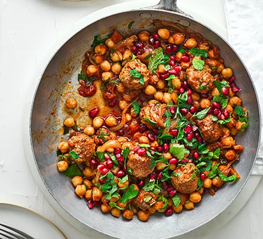

Spiced Lamb Meatball Stew

Ingredients
- 1 tbsp oil
- 12 shop-bought lamb meatballs
- 1 onion, sliced
- 2 large garlic cloves, crushed
- 2 tsp ground cumin
- 1 tsp ground coriander
- 1/2 tsp ground cinnamon
- 1 tbsp rose harrisa
- 400g of can chopped tomatoes
- 200ml low-salt stock (lamb or beef)
- 2 x 400g canned chickpeas
- Small bunch of parsley, finely chopped
- 1/2 small bunch of mint, chopped
- 50g pomegranate seeds
Method
- Heat the oil in a large, shallow casserole dish or deep frying pan. Add the meatballs and fry for 3-4 minutes, turning regularly, until golden. Remove and set aside.
- Tip the onion into the pan and fry for 7 minutes until softened. Stir through the garlic cumin, coriander and cinnamon, and cook for 1 minute. Add the harrisa, tomatoes and lamb stock, and bring to a simmer. Stir through the chickpeas and meatballs, season and simmer for 10-15 minutes until slightly reduced and the meatballs are cooked through.
- Stir through half the herbs, then scatter the rest on top along with the pomegranate seeds.